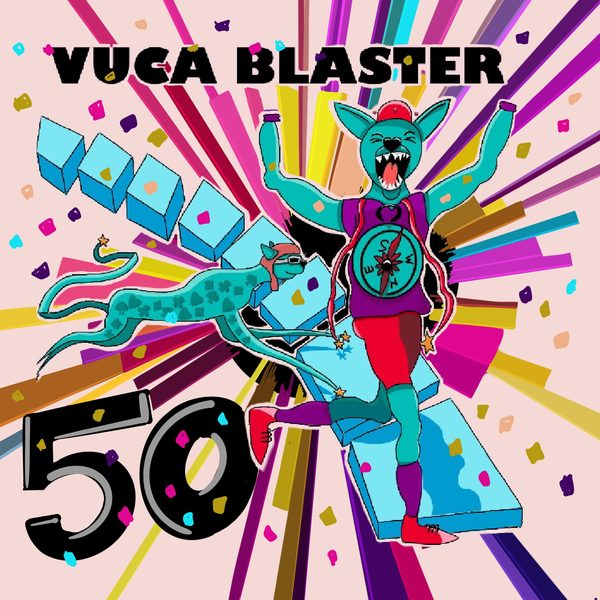

#50
Jubiläumsfolge mit Sebastian & Manuel
Manuel und Sebastian blicken auf 50 Folgen zurück: was sie gelernt haben, was sie bewegt und welche Themen noch kommen könnten.
· 50 Min.
- neugierig · Hauptwert
Diese Folge hören
Dort hilft jedes Abo und jede Bewertung dem Podcast.
Worum es geht
Bei der heutigen Folge reflektieren die sonstigen Hosts Manuel und Sebastian die letzten 50 Folgen. Was haben wir alles gelernt, wer sind wir eigentlich und was bewegt uns sowie welche Gäste oder Themen wären noch interessant für kommende Folgen. Viel Spaß und auf weitere 50 Folgen :)
